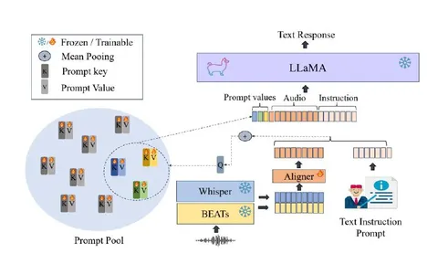
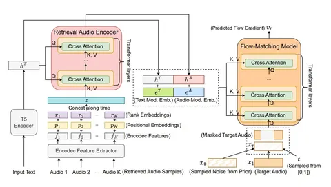

Сегодня вспомним о паре любопытных статей с Interspeech 2025, связанных с динамическим выбором промпта из некоторой базы.
Audiobox TTA-RAG: Improving Zero-Shot and Few-Shot Text-To-Audio with Retrieval-Augmented Generation
Авторы улучшают качество text-to-audio-генерации для случаев, слабо представленных в обучающем датасете, добавляя conditioning на сэмплы из большой базы неразмеченных аудио. Для выбора примеров из базы используют косинусное расстояние между CLAP-эмбеддингами: на этапе обучения сравнение проводится с эмбеддингом целевого аудио, на инференсе — с эмбеддингом входного текста.
LiSTEN: Learning Soft Token Embeddings for Neural Audio LLMs
В работе предлагают метод адаптации предобученной текстовой LLM под решение различных задач с text-audio-входом (текстовая инструкция + входная аудиозапись) и текстовым выходом в мультитаск-формате. Кроме стандартного подхода — кодирования входного аудио предобученным энкодером и обучения адаптера во входной формат текстовой LLM — авторы обучают пул промптов: случайно проинициализированных key-value-пар.
Эмбеддинги входных данных каждого сэмпла — текста и аудио — усредняют для получения query. После чего выбирают топ-k промптов по расстоянию между query и key и добавляют ко входу LLM соответствующие value.
По словам авторов, в отличие от обучения отдельного промпта под каждую задачу, предложенный подход позволяет переносить знания между различными сценариями. В результате модель лучше генерализуется под новые задачи и требует меньшего количества обучающих данных для каждой конкретной. А в отличие от полностью разделяемых параметров, такой подход препятствует переобучению под какие-то из задач или забыванию базовых знаний предобученной модели.
Дарья Петренко
